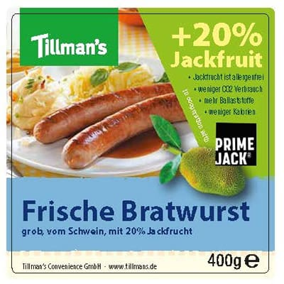

Thank you for supporting PrimeJack. On the official Food Innovation Camp voting page, please select:
No. 26 – PrimeJack (Fiber Foods)
The official page may appear in German, but please simply look for No. 26 – PrimeJack (Fiber Foods).